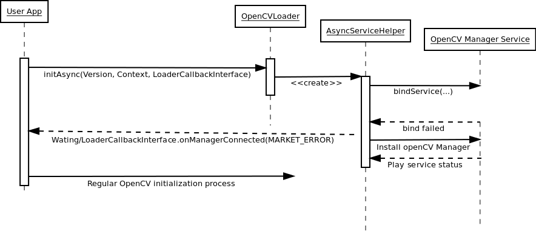
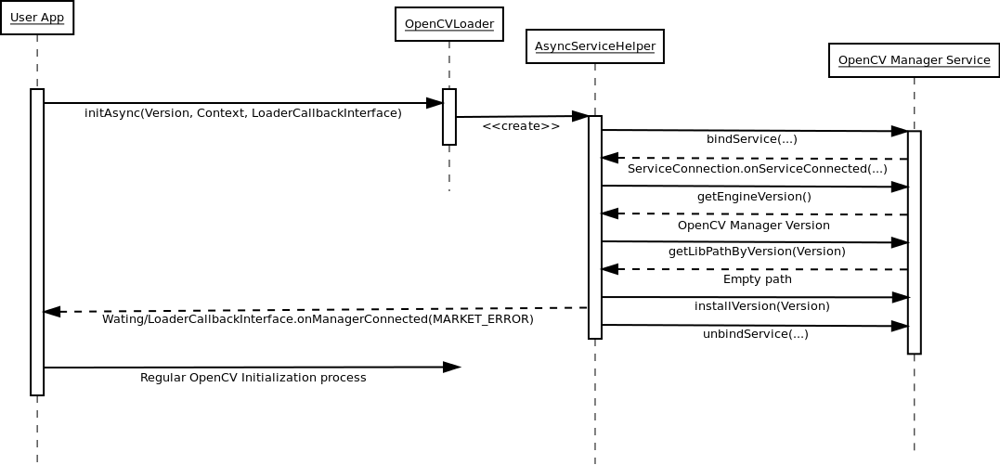
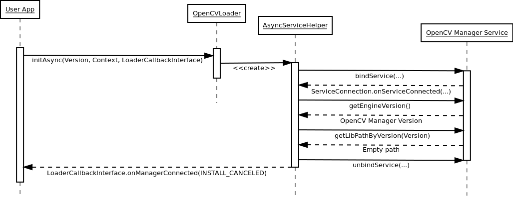
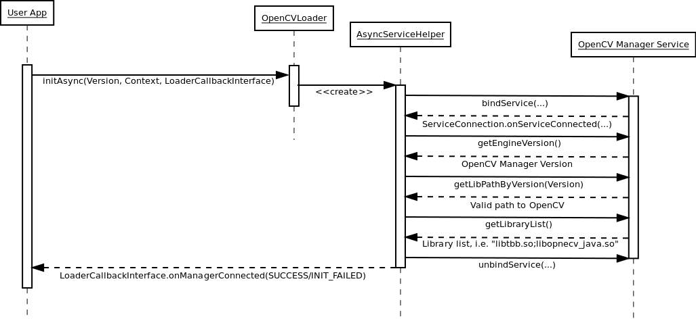

Manager Workflow¶
How to select the proper version of OpenCV Manager¶
DEPRECATED: This information is outdated since OpenCV 2.4.12
Since version 1.7 several packages of OpenCV Manager are built. Every package is targeted for some specific hardware platform and includes corresponding OpenCV binaries. So, in most cases OpenCV Manager uses built-in version of OpenCV. Separate package with OpenCV binaries is currently used in a single rare case, when an ARMv7-A processor without NEON support is detected. In this case an additional binary package is used. The new package selection logic in most cases simplifies OpenCV installation on end user devices. In most cases OpenCV Manager may be installed automatically from Google Play.
If Google Play is not available (i.e. on emulator, developer board, etc), you can install it manually using adb tool:
adb install OpenCV-2.4.9-android-sdk/apk/OpenCV_2.4.9_Manager_2.18_<platform>.apk
Use the table below to determine proper OpenCV Manager package for your device:
| Hardware Platform | Android ver. | Package name |
|---|---|---|
| armeabi-v7a (ARMv7-A + NEON) | >= 2.3 | OpenCV_2.4.9_Manager_2.18_armv7a-neon.apk |
| armeabi-v7a (ARMv7-A + NEON) | = 2.2 | OpenCV_2.4.9_Manager_2.18_armv7a-neon-android8.apk |
| armeabi (ARMv5, ARMv6) | >= 2.3 | OpenCV_2.4.9_Manager_2.18_armeabi.apk |
| Intel x86 | >= 2.3 | OpenCV_2.4.9_Manager_2.18_x86.apk |
| MIPS | >= 2.3 | OpenCV_2.4.9_Manager_2.18_mips.apk |
First application start¶
There is no OpenCV Manager or OpenCV libraries:
Additional library package installation¶
There is an OpenCV Manager service, but it does not contain appropriate OpenCV library. If OpenCV library installation has been approved:
If OpenCV library installation has been cancelled:
Regular application start¶
OpenCV Manager and OpenCV library has been already installed.
Help and Feedback
You did not find what you were looking for?- Ask a question on the Q&A forum.
- If you think something is missing or wrong in the documentation, please file a bug report.